Plan wycieczki
Zwiedzone miejsca
- San Francisco
- Alcatraz
- Point Arena Lighthouse
- Glass Beach
- Lassen Volcanic National Park
- Redwood National Park
- Crater Lake National Park
- Toketee Falls
- Smith Rock State Park
- Trillium Lake
- Multnomah Falls
- Portland
- Olympic National Park
- Ruby Beach
- Big Cedar Tree
- Seattle
- Yellowstone National Park
- Yellowstone Bear World
- Bonneville Salt Flats
- Salt Lake City
- Arches National Park
- Capitol Reef National Park
- Bryce Canyon National Park
- Zion National Park
- Zapora Glen Canyon
- Horseshoe Bend
- Grand Canyon National Park
- Zapora Hoovera
- Las Vegas
- Route 66
- Joshua Tree National Park
- San Diego
- Los Angeles
- Universal Studios Hollywood
- Sequoia National Park
- Yosemite National Park
- Googleplex
Czas wycieczki: 22 dni
Skład osobowy: 3 dorosłych, 2 letni Bąbel
Przejechane kilometry: około 11 tysięcy
Przybliżony koszt na osobę: 10 000 PLN, zawiera ceny:
- przelotu z bagażem rejestrowanym
- noclegów
- wynajmu samochodu, paliwa, opłat za drogi i parkingi, międzynarodowego prawa jazdy
- ubezpieczenia turystycznego, wizy, starterów
- wejściówek do: Alcatraz, Parków Narodowych (karta American Beauty), Muzeum Lotnictwa w Seattle, Space Needle, Universal Studio
Bilety na wyjazd we wrześniu kupiliśmy w marcu za 1600 PLN (tam i z powrotem, wliczając bagaż rejestrowany) na stronie flipo.pl. Noclegi rezerwowaliśmy przez Airbnb oraz Booking i zdecydowanie polecamy ten pierwszy sposób. Wyższy standard za niższą cenę. Lot z Berlina (Tegel) do San Francisco z przesiadką w Helsinkach. Do Berlina dojechaliśmy samochodem i zostawiliśmy go na darmowym parkingu na Saatwinkler Damm. Wynajeliśmy samochód Nissan Armada v8 4x4, ponieważ nie chcieliśmy mieć problemów z dojechaniem we wszystkie miejsca na liście. Będąc w miastach w USA wybieraliśmy głównie płatne parkingi blisko miejsc, które chcieliśmy zobaczyć. Jeżdżąc samochodem wszędzie spotkacie skrzyżowania ze znakami STOP, na których obowiązuje zasada, kto się pierwszy zatrzymał, ten pierwszy jedzie. Dodatkowo, jeśli nie ma zakazu, na światłach można skręcać w prawo, nawet jeśli jest czerwone (taka domyślna strzałka warunkowa). Dobrze też zaopatrzyć się w kartę kredytową, ponieważ nie wszędzie zapłacicie debetówką lub Revolutem. Jeśli chodzi o ilość gotówki, mieliśmy ze sobą około 150 dolarów na osobę i to wystarczyło z nadwiązką. Praktycznie w każdym z odwiedzonych miejsc moglibyśmy spędzić więcej czasu, ale zależało nam ta tym, aby w te trzy tygodnie zobaczyć jak najwięcej różnych rzeczy.
Film z wycieczki możecie zobaczyć tutaj(jeśli macie możliwość, obejrzyjcie w 4K 😊).
Plan wycieczki
Szczegóły planu
Dzień pierwszy
- 17:30 - przylot, sprawy organizacyjne
- nocleg w Pinole
Dzień drugi
- 9:30 - rejs na Alcatraz i Angel Island
- 12:00 - zwiedzanie San Francisco
- nocleg w Pinole
Dzień trzeci
- 8:00 - wyjazd
- 11:00 - Bowling Ball Beach, zwiedzanie do 12:00 (niezrealizowany punkt)
- 12:15 - Point Arena Lighthouse and Museum, zwiedzanie do 12:45
- 14:00 - Glass Beach, zwiedzanie do i obiad do 15:00
- 20:00 - nocleg w Redding
Dzień czwarty
- 6:30 - wyjazd
- 7:30 - Lassen Peak, Lake Helen, zwiedzanie do 10:30
- 15:30 - Redwood National Park (w rzeczywistości byliśmy 2 godziny później z powodu problemów pogodowych na Lassen Peak)
- 21:30 - nocleg w Kerby
Dzień piąty
- 07:00 - wyjazd
- 9:00 - Crater Lake (zwiedzanie miało być do 11 ale z powodu zimy zamknięta była droga biegnąca naokoło jeziora)
- 12:00 - Toketee Falls, zwiedzanie do 13:00 (dojechaliśmy później z tych samych powodów, co wyżej)
- 15:30 - Smith Rock State Park, zwiedzanie do 17:30
- 18:30 - nocleg w Warm Springs
Dzień szósty
- 8:00 - wyjazd
- 9:00 - Trillium Lake, zwiedzanie do 9:30
- 11:00 - Multnomah Falls, zwiedzanie do 13:00
- 15:00 - Portland, zwiedzanie do 19:00
- 20:30 - nocleg w Vancouver
Dzień siódmy
- 6:00 - wyjazd
- 09:30 - Olympic National Forest
- 22:00 - nocleg w Tukwilla
Dzień ósmy
- 8:00 - wyjazd
- 9:00 - fabryka Boeinga, zwiedzanie do 11:00
- zwiedzanie Seattle do końca dnia
- nocleg w Tukwilla
Dzień dziewiąty
- 8:00 - wyjazd
- 12:00 - przyjazd do Spokane, przerwa do 12:30
- 15:30 - przerwa w Missuola
- 20:00 - nocleg w West Yellowstone
Dzień dziesiąty
- 7:00 - wyjazd
- 08:30 - Yellowstone
Dzień jedenasty
- 08:00 - wyjazd
- 10:00 - Old Faithfull Geyser, zwiedzanie do 12:00
- 12:30 - Grand Prismatic Spring
- 14:30 - Yellowstone Bear World, zwiedzanie do 16:00
- 20:00 - nocleg w Tremonton
Dzień dwunasty
- 07:00 - wyjazd
- 09:30 - Salt Flat Bonneville, zwiedzanie do 10:00
- 12:00 - Natural Muzeum of Utah, zwiedzanie do 14:00
- zwiedzanie Salt Lake City do 16:00
- 20:00 - nocleg w Price
Dzień trzynasty
- 08:00 - wyjazd
- 09:30 - Arches National Park, zwiedzanie do 12:30
- 14:30 - Capitol Reef National Park, zwiedzanie do 17:30
- 20:00 - nocleg w Bryce City
Dzień czternasty
- 08:00 - Bryce Canyon National Park, zwiedzanie do 12:00
- 13:30 - Zion National Park, zwiedzanie do 19:00
- 20:30 - nocleg w Page
Dzień piętnasty
- 08:00 - Glen Canyon, zwiedzanie do 10:30
- 13:00 - Grand Canyon National Park, zwiedzanie do 20:00
- 21:00 - nocleg w Valle
Dzień szesnasty
- 08:00 - wyjazd
- 11:00 - Zapora Hoovera, zwiedzanie do 12:30
- 13:30 - Las Vegas, zwiedzanie do wieczora i nocleg
Dzień siedemnasty
- 07:00 - wyjazd (wyjechaliśmy prawie 2 godziny później i z tego powodu San Diego zwiedzaliśmy po zmroku
- 10:00 - Joshua Tree National Park, zwiedzanie do 13:00
- 15:30 - zwiedzanie San Diego i nocleg
Dzień osiemnasty
- 07:00 - wyjazd
- 10:00 - Los Angeles, zwiedzanie do wieczora i nocleg
Dzień dziewiętnasty
- zwiedzanie Universal Studio, Beverly Hills i Santa Monica
- 20:00 - nocleg w Los Angeles
Dzień dwudziesty
- 06:00 - wyjazd
- 09:00 - Sequoia National Park, zwiedzanie do 18:00
- 20:00 - nocleg w Coarsegold
Dzień dwudziesty pierwszy
- 08:00 - wyjazd
- 08:30 - Yosemite, zwiedzanie do 17:00
- 19:00 - nocleg w Sonora
Dzień dwudziesty drugi
- 9:00 - wyjazd
- 12:00 - Googleplex, zwiedzanie do 13:00
- 14:00 - ogarnięcie samochodu, przyjazd na lotnisko i.. do domu
Plan wycieczki
Trasa
Zwiedzanie
SAN FRANCISCO
o długiej podróży: 6 godzin samochodem do Berlina, 2 godzinny lot do Helsinek i 11 godzinny do San Francisco, nareszcie jesteśmy! Pierwsze późne popołudnie upłynęło na dopinaniu formalności związanych z wynajmem samochodu (Alamo), kupnie starterów (T-Mobile). Na miejsce noclegu dojechaliśmy późno ale i tak obudziliśmy się kolejnego dnia o 3 więc, żeby nie marnować czasu, skoczyliśmy na zakupy do sklepu Walmart - o 4 jest praktycznie pusty. Po przebiciu się przez poranne korki (są tutaj specjalne pasy dla samochodów z 3+ pasażerami) dotarliśmy do Pier 33 skąd odpływała nasza wycieczka do Alcatraz i na Angel Island. Więzienną wyspę można zwiedzać na własną rękę. Najpierw wybraliśmy się do budynku więzienia, omijając pozostałe miejsca, ponieważ nie byliśmy pewni, czy wystarczy nam czasu, żeby zobaczyć wszystko. Więzienie zwiedza się z audio przewodnikiem i trzeba przyznać, że robi wrażenie. Nie spodziewałam się takich małych cel i takich warunków życia. Nic dziwnego, że nikt tam nie chciał trafić. Trafiliśmy też na strażnika, który prezentował, w jaki sposób działa otwieranie cel. Po wyjściu szybki spacer po pozostałych miejscach i wsiedliśmy na statek, którym popłynęliśmy na Angel Island. Tam przywitał nas bardzo mocny wiatr i przejażdżka, na trasie której można było zobaczyć zarówno naturę, jaka zadomowiła się na wyspie, jak i zabytkowe militarne budowle z czasów wojny secesyjnej. Ostatnim punktem było zwiedzanie miasta. Zjedliśmy obiad w restauracji "jak z filmów" (wielkie porcje, nie byliśmy w stanie zjeść wszystkiego) i ruszyliśmy dalej. W jednej chwili jesteśmy w dzielnicy portowej, w następnej pośrodku wysokich wieżowców, z samolotem ciągnącym reklamę ponad ich szczytami, by finalnie skończyć w Chinatown. Każda część ma swój niepowtarzalny klimat a wszystkie łączą wszechobecne wzgórza (i schody, więc jeśli zwiedzacie z dzieciakiem w wózku, przygotujcie się na noszenie - lub na porady mieszkańców, którzy widząc nas z wózkiem idących w stronę schodów podchodzili i podpowiadali nam inną drogę).
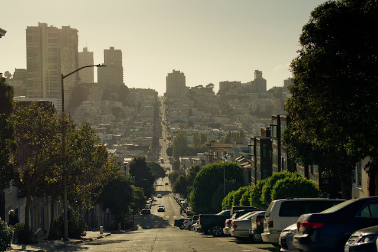
Zwiedzanie
WYBRZEŻE: POINT ARENA LIGHTHOUSE I GLASS BEACH
Ruszamy na północ! W planach oprócz punktów wymienionych wyżej mieliśmy jeszcze Bowling Ball Beach, na której kamienie uformowały się jak kule do kręgli, ale gdy zapytaliśmy miejscowego o drogę okazało się, że fale są dzisiaj zbyt wysokie i przykryły całą plażę. Generalnie pogoda nas nie rozpieszczała: większość podróży wybrzeżem minęła nam w gęstej mgle. Kiedy dojechaliśmy do Point Arena Lighthouse mgła ustąpiła ale za to pojawił się silny wiatr. Na plaży niedaleko jaskini można spotkać lwy morskie. Ostatnim miejscem przed noclegiem była Glass Beach (śmietnisko, które stało się obszarem chronionym), gdzie oprócz zbieraczy kolorowych kamieni na plaży spotkaliśmy oswojone wiewiórki.
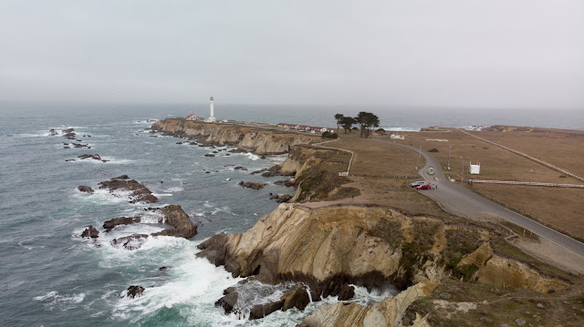
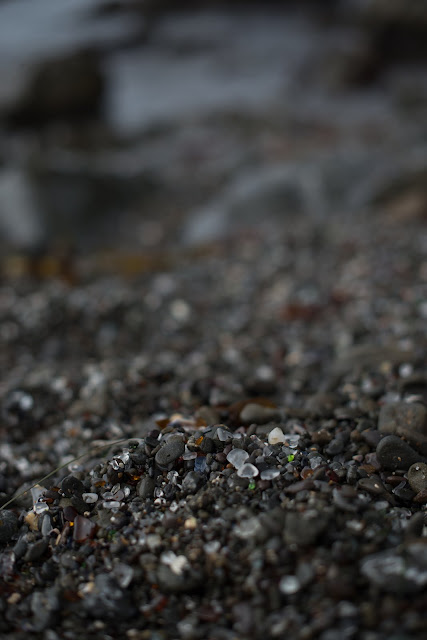
Zwiedzanie
LASSEN VOLCANIC PARK I REEDWOOD
Na początku wyjście na Lassen Peak zapowiadało się świetnie pod kątem pogody. Jednak gdy dojechaliśmy do początku szlaku rozpętała się prawdziwa śnieżyca. Chłopaki postanowili ruszyć na szczyt tak czy inaczej a ja z małą poczekałyśmy w samochodzie na trochę lepszą pogodę i ruszyłyśmy na szlak około godzinę później. Śnieg przestał padać, mgła się rozeszła i można było podziwiać niesamowite widoki - przynajmniej z tego miejsca, do którego my dotarłyśmy. Chłopaki, z powodu mgły w wyższych partiach wulkanu, nie są w stanie jednoznacznie stwierdzić, czy dotarli na szczyt czy jednak nie. Po zejściu zatrzymaliśmy się jeszcze na chwilę nad Lake Helen i potem obraliśmy kurs na Reedwood. Niestety wyjście na Lassen Peak zajęło dłużej niż planowaliśmy i w Reedwood udało się przejść tylko jednym szlakiem: Tall Trees Grove z olbrzymimi sekwojami. Jeśli chcecie się tam wybrać, pamiętajcie żeby wcześniej odwiedzić Visitor Center i pobrać bezpłatne pozwolenie z kodem do kłódki, na którą zamknięty jest szlaban na drodze dojazdowej.
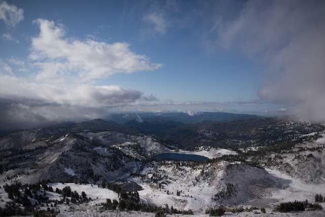
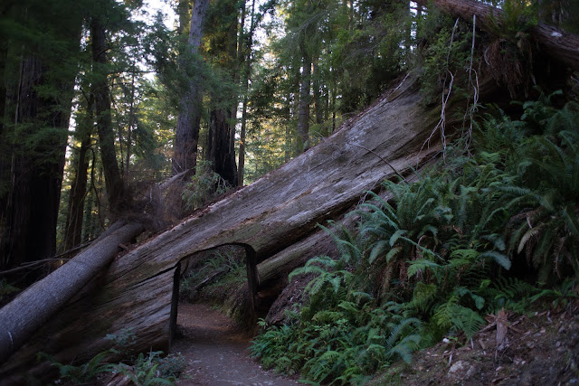
Zwiedzanie
CRATER LAKE, TOKETEE FALLS I SMITH ROCK STATE PARK
Podczas jazdy do jeziora kraterowego las na odcinki kilku mil zmienił z jesiennego na zimowy, a gdy dotarliśmy na szczyt, zima była już w pełni. Z tego powodu zamknięta została droga prowadząca naokoło jeziora więc musieliśmy zmienić nasze plany, które początkowo obejmowały zatrzymywanie się w punktach widokowych na tej zamkniętej drodze właśnie. Od lokalnych mieszkańców dowiedzieliśmy się, że w tym roku śnieg pojawił się tam wyjątkowo wcześnie. Trzeba jednak przyznać że jezioro w zimowej scenerii robi niesamowite wrażenie. Zwłaszcza, kiedy człowiek wyobrazi sobie jak potężna była góra przed wybuchem - i w gruncie rzeczy jak potężny był sam wybuch, który doprowadził krajobraz do takiego stanu. Dojście do Toketee Falls zabrało nas w zupełnie inną porę roku. Do wodospadu prowadzi zielony, bardzo klimatyczny szlak. Pomiędzy zarośniętymi mchem głazami i drzewami kryją się kamienne schodki i tak dochodzimy do platformy widokowej, która jest zbudowana na drzewie, dookoła pnia. Na parkingu, gdzie zaczyna się szlak można też zobaczyć wielkie, drewniane i przeciekające rury które są ciekawym elementem krajobrazu. No i w końcu Smith Rock State Park. Mieliśmy tylko godzinę, żeby go zobaczyć i to zdecydowanie za mało: park oferuje bardzo dużo szlaków, miejsc do wspinaczki i wspaniałych widoków - my zobaczyliśmy zaledwie ułamek z tego wszystkiego. Na koniec dnia spotkała nas niespodzianka: okazało się, że nasz nocleg znajduje się w środku indiańskiego rezerwatu w Warm Springs. Cały domek pełen był tematycznych akcentów (jak wycieraczka z napisem “I love my tribe”) i książek opisujących historię mieszkających tutaj ludzi.
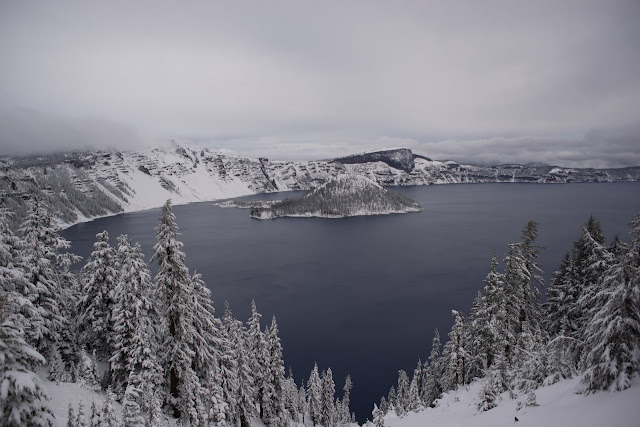
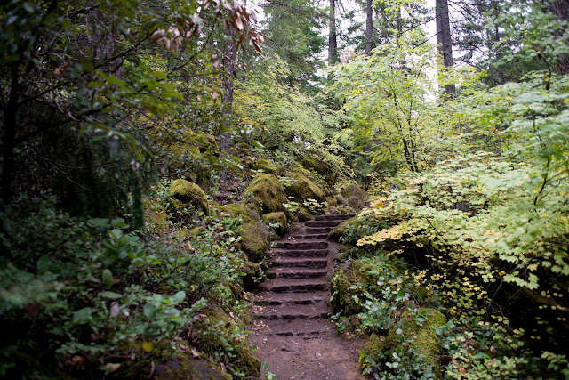
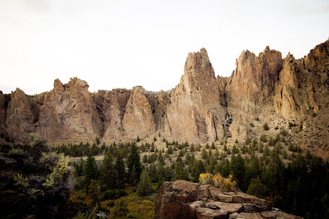
Zwiedzanie
TRILLIUM LAKE, MULTNOMAH FALLS I PORTLAND
Rano dojechaliśmy nad Trillium Lake, nad którym góruje Mt Hood. Przy ładnej pogodzie góra pięknie odbija się w jeziorze, my jednak tym razem nie mieliśmy szczęścia: szczyt był cały w chmurach i nic nie wskazywało na to, że to się może zmienić więc ruszyliśmy dalej do Multnomah Falls. Wodospad znajduje się przy rzece Columbia, która zaskakuje swoją szerokością. Można go zobaczyć z dołu a także z góry, prowadzi tam prosty i krótki szlak. W Portland zajrzeliśmy na Pioneer Square South po drodze mijając pierwszy na świecie sklep Nike, odwiedziliśmy klęczącą Portlandię i w końcu dotarliśmy do punktu, który interesował mnie najbardziej: kilkupiętrowej, największej księgarni na świecie: Powell's City of Books. Ukoronowaniem dnia były donuty w Blue Star Donuts z których słynie Portland.
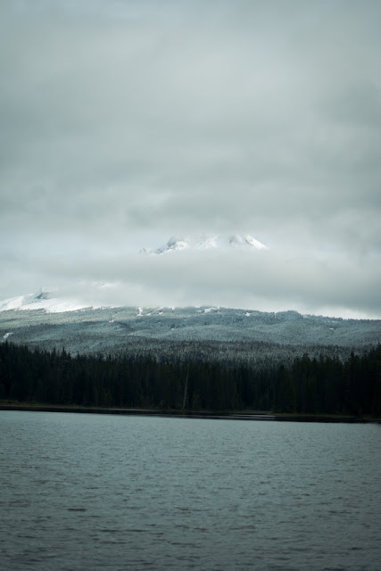
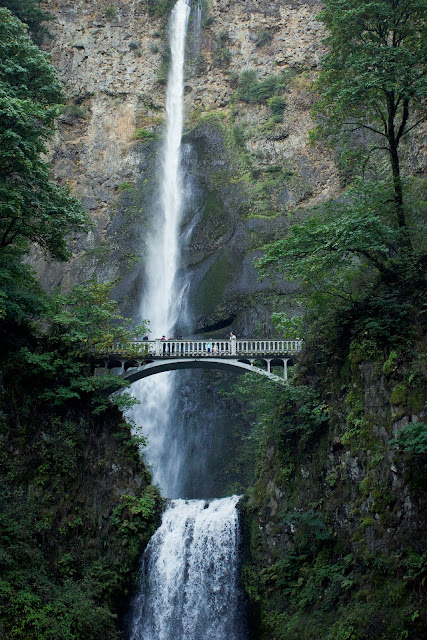
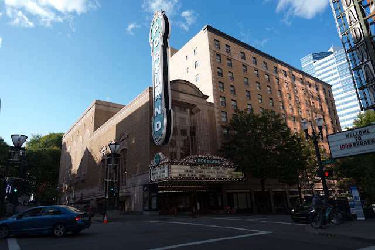
Zwiedzanie
OLYMPIC NATIONAL PARK
Trasę po tym olbrzymim parku zaczęliśmy od wjechania na Hurricane Riggs. Tym razem pogoda nam sprzyjała i można było obejrzeć wszystkie okoliczne szczyty a nawet zobaczyć wybrzeże Kanady. Następny przystanek do wodospad Marymere nad jeziorem Crescent. Szlak prowadzi przez las, który miejscami przypomina tropikalną dżunglę ze względu na długi mech zwisający z gałęzi. Żeby podtrzymać równikowy klimat kolejnym punktem wycieczki był Hoh Rain Forest. Idąc pętla pomiędzy drzewami, można było miejscami poczuć zapach migdałów a przede wszystkim można było zobaczyć, unikalny jak na tą szerokość geograficzna, las z wysokimi paprociami i wszechobecnym mchem. Jadąc dalej zatrzymaliśmy się na Ruby Beach, żeby obejrzeć zachód słońca. I to był strzał w dziesiątkę. Promienie zachodzącego słońca odbijają się tam nie tylko w wodzie ale też w czarnym piasku na plaży. Już po zmroku podjechaliśmy jeszcze obejrzeć Big Cedar, ale o tej porze ciężko było dostrzec jego prawdziwe rozmiary.
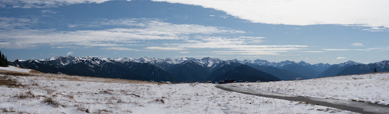
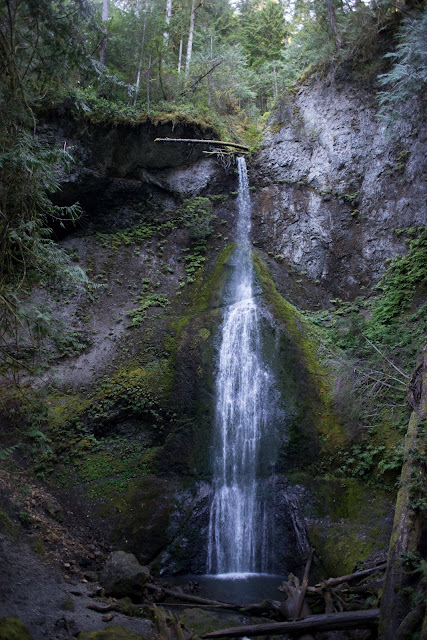
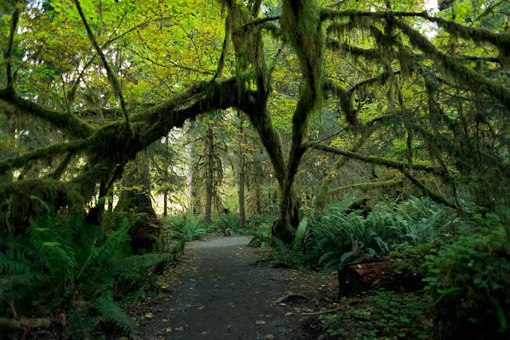
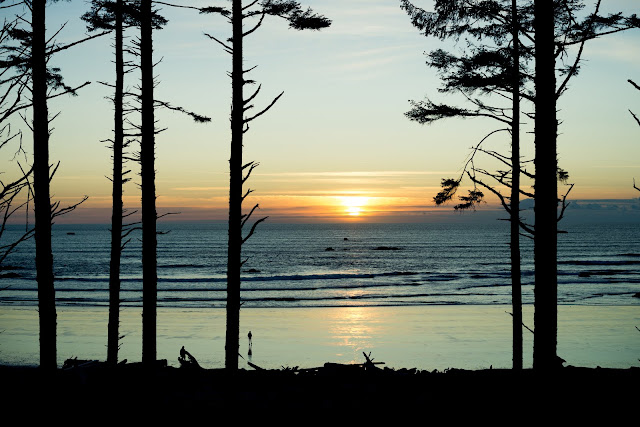
Zwiedzanie
SEATTLE
Miasto poza atrakcjami przywitało nas wyjątkową gościnnością, ponieważ zatrzymaliśmy się u naszej rodziny. Gdyby nie napięty plan, chętnie spędzilibyśmy tutaj więcej niż dwa dni. Zaczęliśmy od Muzeum od Flight, gdzie nasz prywatny przewodnik (dzięki Wojtek!) zasypał nas informacjami na temat eksponatów. A jest tam co oglądać, poza masą samolotów z różnych czasów: dwupiętrowa ekspozycja dotycząca pierwszej i drugiej wojny światowej, prawdziwy wahadłowiec, Condord, samoloty którymi latali między innymi Nixon i Kennedy, B-52 i cmentarzysko wycofanych Boeingów. Do części wystawy, która znajduje się na zewnątrz można wejść i zwiedzić wnętrza. W mieście zobaczyliśmy Pike Plac Market, wyjechaliśmy na Space Needle i dzięki dobrej pogodzie mogliśmy zobaczyć nie tylko Seattle ale i okoliczne pasma górskie. Na koniec przespacerowaliśmy się wśród wieżowców. A przez kolację z rodziną nasze plany dotyczące wczesnego wyjazdu spaliły na panewce, ale nawet nie zauważyliśmy mijającego czasu przy rozmowie, pysznej kolacji i nie tylko. Następny dzień upłynął na jeździe samochodem: mieliśmy do pokonania najdłuższy odcinek na naszej trasie - kierunek Yellowstone.
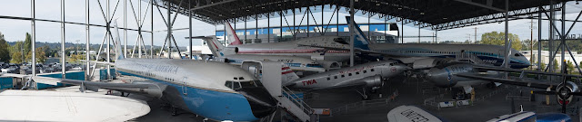
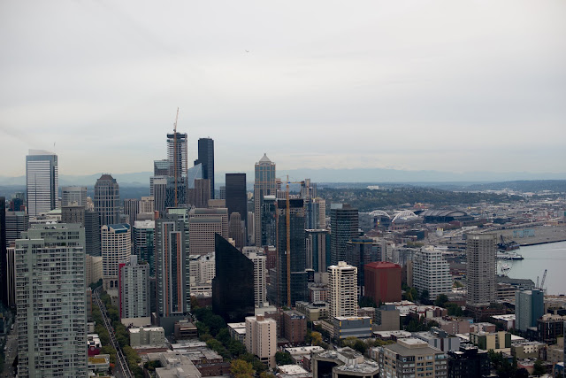
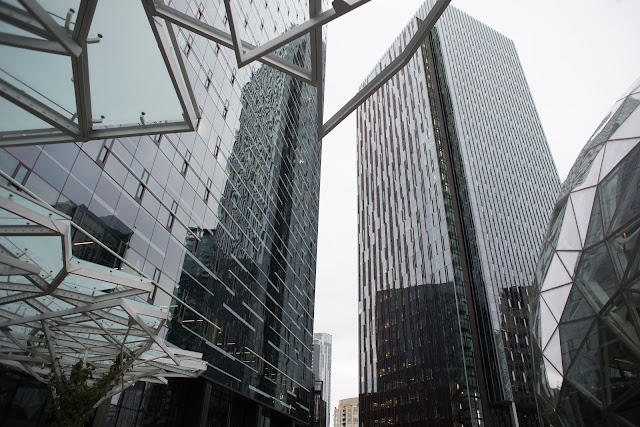
Zwiedzanie
YELLOWSTONE I YELLOWSTONE BEAR WORLD
Do parku ruszyliśmy razem ze wschodem słońca i to był bardzo dobry pomysł, ponieważ nie tylko uniknęliśmy tłumów ale tez spotkaliśmy przy drodze dużo zwierzaków: bizony, które blokowały drogę, jelenie kanadyjskie, które pasły się zaraz przy jezdni, czarnego niedźwiedzia, widłorogi amerykańskie i kojoty. Pierwszego dnia po wjechaniu na Grand Loop (droga zamknięta od grudnia do kwietnia) pojechaliśmy na północną część parku, co okazało się bardzo dobrą decyzją, ponieważ po opadach śniegu dzień później ta droga została zamknięta. Zobaczyliśmy kolejno: Gibbon Falls, Mammoth Hot Springs (gdzie zaczął padać śnieg), Lamar Valley, gdzie jest największa szansa na spotkanie różnego rodzaju zwierzaków, Tower Fall, Grand Canyon of the Yellowstone. Śnieżyca przybierała na siłę, więc zatrzymaliśmy się jeszcze tylko przy Sulphur Caldron, Mud Volcano i West Thumb Geyser Basin z gejzerami mieniącymi się różnymi kolorami. Drugiego dnia (już bez śniegu!) pojechaliśmy zobaczyć wybuchający Old Faithful (godzinę ostatniej erupcji można sprawdzić na stronie parku) oraz Midway Geyser Basin z obowiązkowym punktem parku czyli Grand Prismatic Spring. Jeśli planujecie odwiedzić to miejsce, pamiętajcie o przeciwdeszczowej kurtce - wyszłam stamtąd nieźle przemoczona. Na koniec wybraliśmy się do Yellowstone Bear World, co moim zdaniem jest ciekawa atrakcją dla dzieciaków - oprócz przejechania samochodem wśród niedźwiedzi, można też pogłaskać i nakarmić sarny, kozy czy gęsi. Jakby było nam mało zwierząt, noc spędziliśmy na farmie w otoczeniu krów i kucyków a właściciele przygotowali dla nas świeże jajka na śniadanie.
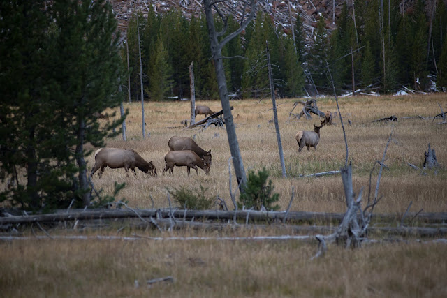
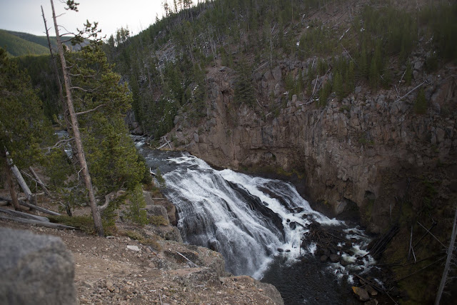
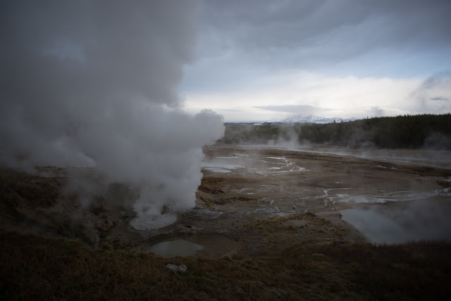
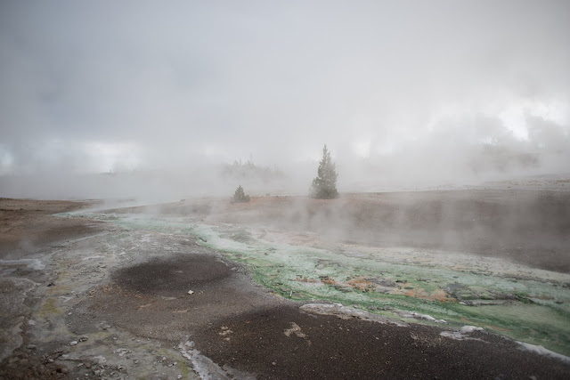
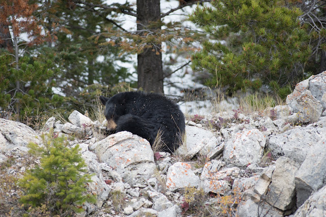
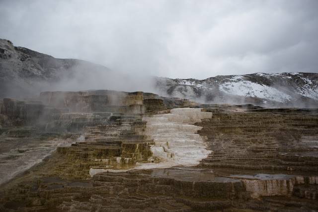
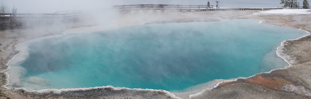
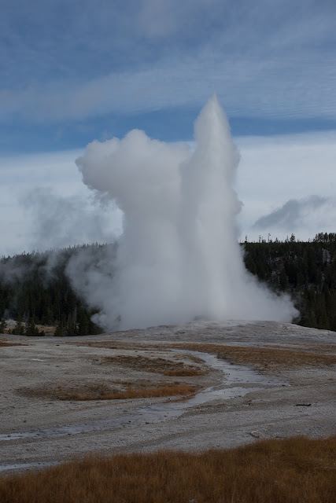
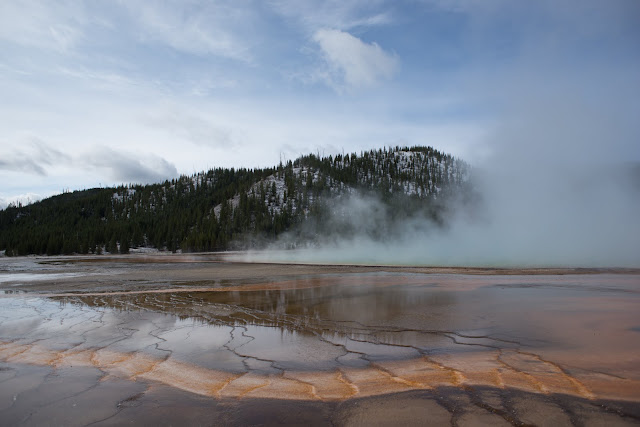
Zwiedzanie
SALT FLAT BONNEVILLE I SALT LAKE CITY
Kolejny dzień był już ciepły… I słony. Najpierw pojechaliśmy zobaczyć Salt Flat Bonneville, która jest pozostałością po prehistorycznym, słonowodnym jeziorze. Potem wróciliśmy do Salt Lake City a dokładniej do Natural History Museum of Utah. Z powodu przeprowadzanych ćwiczeń ewakuacyjnych zwiedziliśmy je za darmo. A jest tam co zwiedzać: przez kilka pięter można poznać historię ziemi, nieba, własnoręcznie wykonać różne doświadczenia a także zaznajomić się z kulturą Indian. Polecam szczególnie jeśli podróżujecie z dzieciakami. Po obiedzie wybraliśmy się na spacer po mieście, a że dotarliśmy tam w niedzielę okazało się, że sklepy i restauracje pozamykane są na cztery spusty. Jedynymi otwartymi miejscami w okolicach centrum były budynki Mormonów: świątynie, muzea, centrum kongresowe (miasto w mieście). Trafiliśmy również na ich zlot więc wszędzie pełno było elegancko ubranych ludzi - ewidentnie wyróżnialiśmy się na ich tle. Po przejściu przez Temple Square poszliśmy zobaczyć jeszcze Utah State Capitol Building.
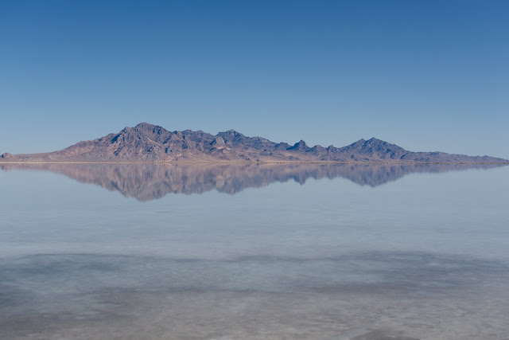
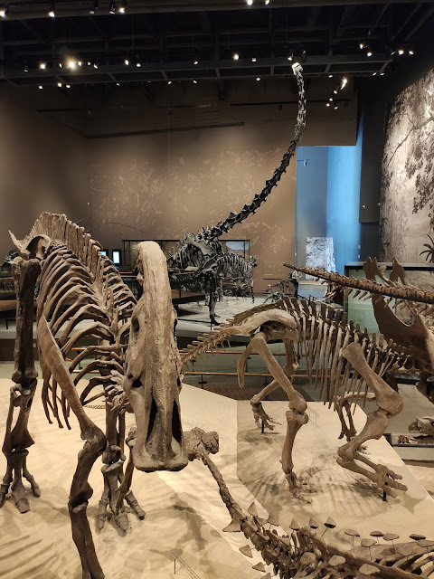
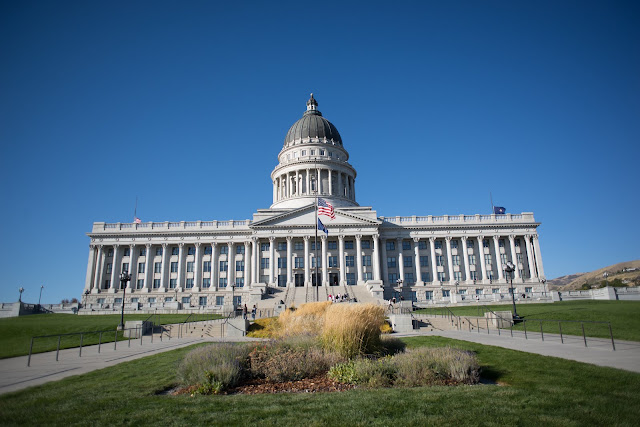
Zwiedzanie
ARCHES NATIONAL PARK I CAPITOL REEF NATIONAL PARK
Do parku arches dobrze wybrać się wcześnie rano, my dojechaliśmy o 9 i już przywitała nas spora kolejka na wjeździe. Na początku zatrzymaliśmy się przy Balanced Rock a potem rozdzieliliśmy się na starcie szlaku Windows Trails i zwiedzialiśmy łuki na własną rękę. Z powodu porannych korków, zostało nam mniej czasu na Capitol Reef, więc zwiedziliśmy go praktycznie przejazdem, zatrzymując się w kilku punktach widokowych po drodze.
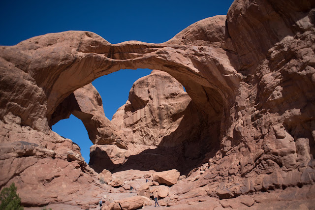
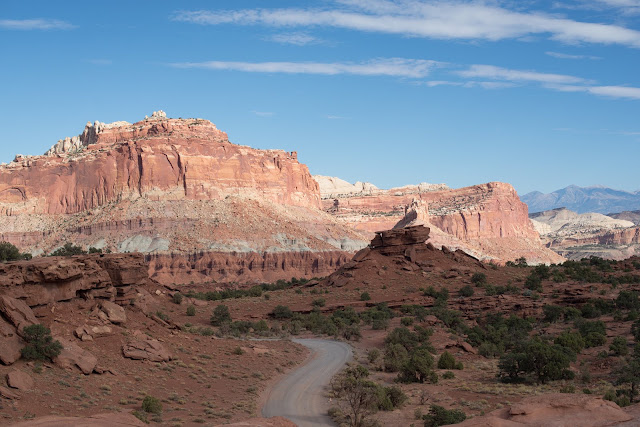
Zwiedzanie
BRYCE CANYON I ZION NATIONAL PARK
Wstaliśmy trochę wcześniej niż początkowo planowaliśmy i pojechaliśmy łapać słońce wschodzące nad Bryce Canyon. Potem Navajo loop trail zeszliśmy na dno kanionu i w towarzystwie wszędobylskich wiewiórek zeszliśmy ze szlaku na Queens Garden Trail by ostatecznie wyjść przy Sunrise Point. Bez dłuższej przerwy ruszyliśmy do Zion, bo tam czekało na nas jeszcze więcej szlaków do przejścia. Po parku trzeba poruszać się specjalnymi autobusami, które zatrzymują się przy początkach szlaków. Jeśli nie musicie jechać do Springdale, zostawcie samochód w okolicy Canyon Junction Bridge - tam też jest przystanek autobusowy. Początkowo planowaliśmy pójść Hidden Canyon Trail ale okazało się, że ścieżka jest zasypana więc zdecydowaliśmy się na Riverside Walk. Doszliśmy do końca łatwiejszej trasy, dalszą część wymaga specjalnego, wodoodpornego ekwipunku (który można wynająć w Springdale), ponieważ część drogi trzeba pokonać brodząc w rzece. Drugi z zaliczonych szlaków to Kayenta Trail połączony dojściem do Upper Emerald Pool. Poza widokami, którymi można się cieszyć po drodze, uroki trasie dodaje jeziorko, które można znaleźć na jej końcu. Część szlaki była zamknięta, więc wróciliśmy do The Grotto i The Grotto Trail przeszliśmy do przystanku The Zion Lodge skąd złapaliśmy autobus powrotny do Springdale.
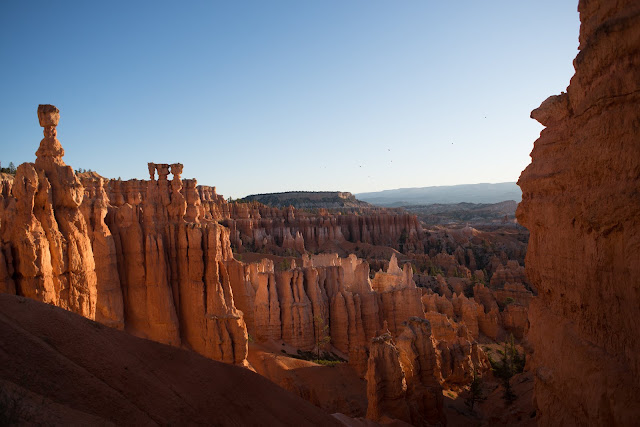
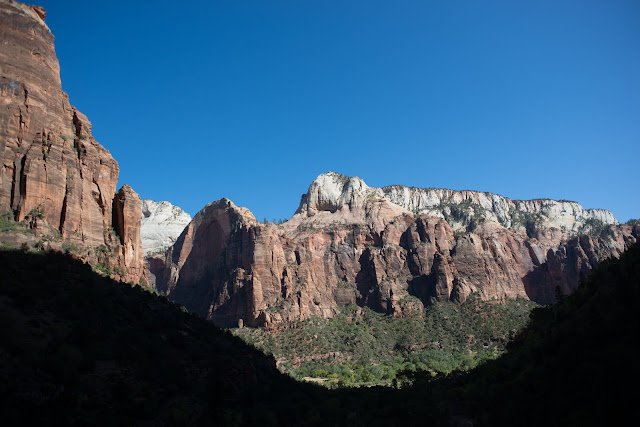
Zwiedzanie
GLEN CANYON DAM, HORSESHOE BEND I WIELKI KANION
wiedzanie kanionu rzeki Kolorado zaczęliśmy od Glen Canyon Dam, która została zbudowana z około 400 tysięcy betonowych bloków (każdy o wadze 24 ton). Potem ruszyliśmy do Grand Canyon Village, zatrzymując się po drodze w kilku punktach: Horseshoe Bend - miejscu, gdzie rzeka Kolorado zakręca o 270°, Desert View z wieżą, z której można podziwiać kanion i Grand Point View, do którego wróciliśmy następnego dnia aby łapać wschodzące słońce na zdjęciach nowej chusty dla SisHomemade. W Grand Canyon Village wybraliśmy się South Rim Trail wzdłuż krawędzi kanionu, jednak nie doszliśmy daleko z dwóch powodów: zbyt dużo czasu spędzaliśmy na punktach widokowych, no ale jak pójść dalej skoro mamy taki widok… no i trafiliśmy też na bardzo silny i zimny wiatr, który skutecznie zniechęcał do spacerów po zachodzie słońca.
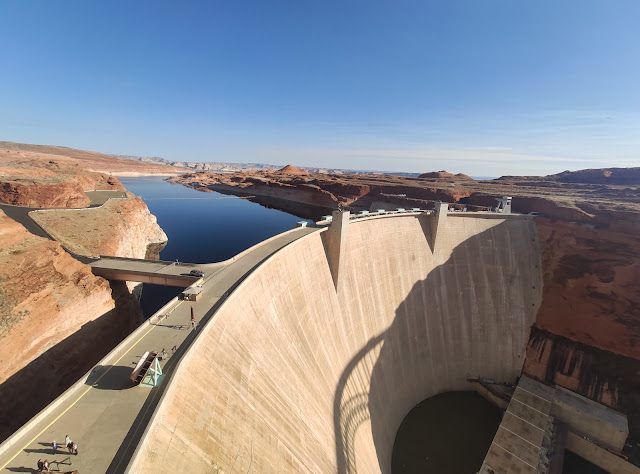

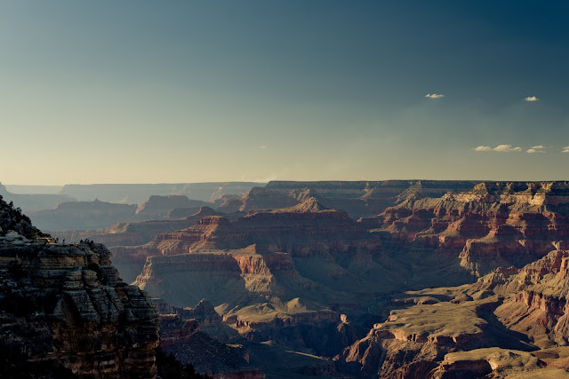
Zwiedzanie
ROUTE 66, HOOVER DAM I LAS VEGAS
Przy zaporze Hoovera moglibyśmy być szybciej, ale chcieliśmy przejechać się historycznymi fragmentami drogi 66. Można przy niej zobaczyć miasteczka, które popadły w ruinę po oddaniu do użytku międzystanowej autostrady nr 40. Stojąc na zaporze, jedną nogę można postawić w Nevadzie a drugą w Arizonie - granica między stanikami biegnie tam wzdłuż rzeki Kolorado. Do 1945 roku była to największa na świecie elektrownia wodna. Las Vegas przytłoczyło nas… ilością kiczu. Po zakwaterowaniu w hotelu ruszyliśmy The Strip, która była naszym głównym celem. Mijając różne epoki i miasta dotarliśmy do kasyna w którym nawet udało się wygrać kilka dolarów. Na zewnątrz powoli zapadał zmierzch i muszę przyznać, że miasto zyskuje po zmroku. Światła neonów skutecznie odwracają uwagę od tandety wykonania poszczególnych dekoracji. Wracając do hotelu zatrzymaliśmy się, aby obejrzeć grające fontanny Hotelu Bellagio oraz wybuch wulkanu przy The Mirage. Drugiego dnia przed wyjazdem z miasta zahaczyliśmy jeszcze o słynny znak Welcome to Fabulous Las Vegas, gdzie spotkaliśmy Elvisa, który dopiero się rozkręcał.
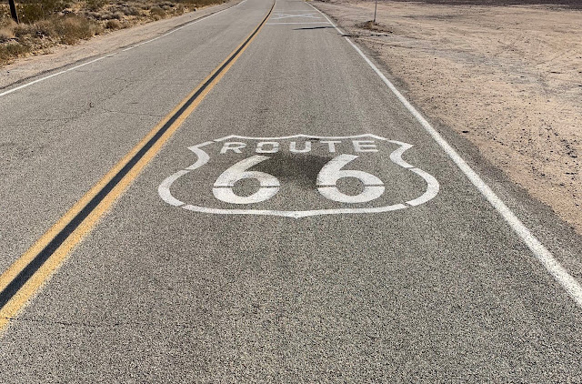


Zwiedzanie
JOSHUA TREE NATIONAL PARK I SAN DIEGO
Rano wyjechaliśmy prawie dwie godziny później niż początkowo zakładaliśmy, ale mieliśmy już serdecznie dość wstawanie przed wschodem słońca. Do parku Joshua Tree, który obejmuje dwie pustynie, wjechaliśmy od strony Oasis Visitor Center. Zobaczyliśmy Jumbo Rocks i Keys View po czym doszliśmy do wniosku, że najwyższa pora ruszać dalej do San Diego. Na miejscu byliśmy wieczorem i po postawieniu rzeczy w mieszkaniu ruszyliśmy na wybrzeże żeby zobaczyć to, co interesowało nas tutaj najbardziej: lotniskowiec USS Midway. Niestety muzeum było już zamknięte i dodatkowo odbywała się na nim zamknięta impreza, ale to co zobaczyliśmy na zewnątrz również robiło wrażenie. Następnie przeszliśmy do pomnika Embracing Peace, który jest odwzorowaniem słynnego zdjęcia V-J Day, na którym widać marynarza, który właśnie wrócił z wojny, całującego przypadkową pielęgniarkę. Na koniec, jak to w każdym mieście, przespacerowaliśmy się wśród biurowców, których charakter, oprócz neonowego podświetlenia, podkreślał jasno świecący księżyc w pełni.
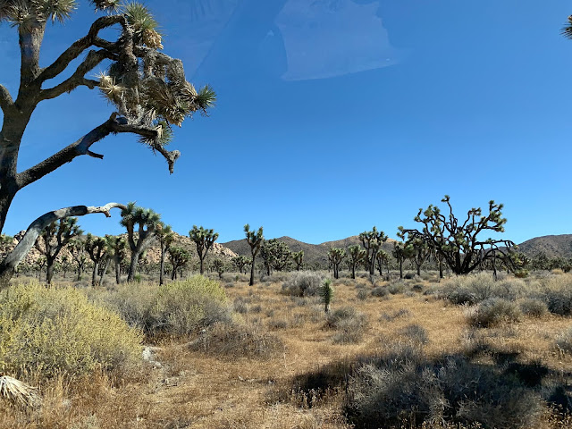
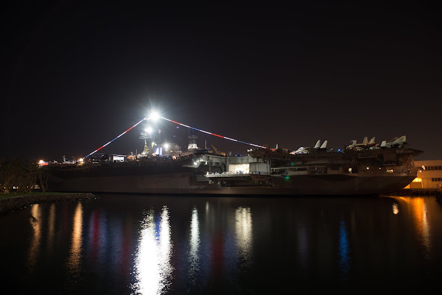
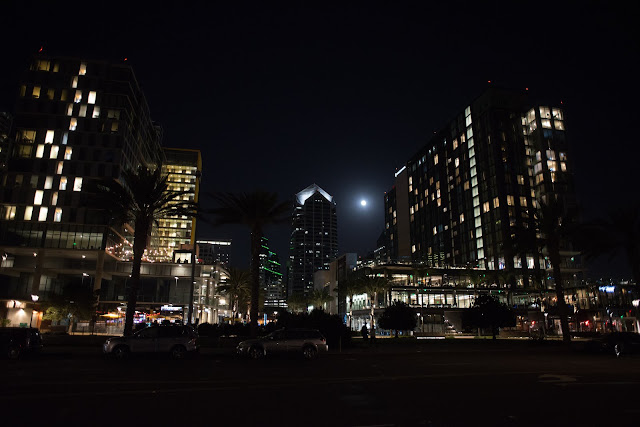
Zwiedzanie
LOS ANGELES I UNIVERSAL STUDIO
Kolejna pobudka o świcie i jedziemy zobaczyć ostatnie miasto na naszej liście. Dojechaliśmy samochodem do Vista Del Valle i już na nogach poszliśmy zobaczyć Griffith Observatory (które można zwiedzić bezpłatnie). Warto odwiedzić wszystkie piętra budynku oraz dach, na którym oprócz panoramy Los Angeles oraz zdjęć znaku Hollywood można przyjrzeć się budowie teleskopu. Następnie skoczyliśmy na Hollywood Blvd żeby przejść się Aleją Gwiazd (było mega tłoczno), na skrzyżowanie Windsor Blvd i W 5th St, skąd można zobaczyć znak Hollywood na końcu ulicy obsadzonej po obu stronach palmami (piękne miejsce na zdjęcia) i finalnie, jak zawsze, wylądowaliśmy wśród biurowców w centrum. Wracając do samochodu, zajrzeliśmy jeszcze do Chinatown. Mieliśmy w planie złapać jeszcze zachód słońca na Santa Monica, ale z powodu dużego natężenia ruchu dotarliśmy tam trochę za późno. Spacer po zmroku w tym miejscu również ma swój urok, zwłaszcza gdy rozbłysną neony w Pacific Parku na Santa Monica Pier (fani GTA byliby zachwyceni tym miejscem). Na plażę wróciliśmy drugiego dnia o wschodzie słońca, żeby zrobić drugą zaplanowaną sesję zdjęciową dla SisHomemade. A potem… pojechaliśmy prawie na cały dzień do Universal Studio (nie opłaca dopłacać się za parking premium, tańszy nie jest daleko a jest kryty). I bawiliśmy się tam jak małe dzieci: zaczęliśmy od kina 4D z Kung Fu Pandą, następnie wioska Hogsmeade oraz Hogwart (w samym tym miejscu można by spędzić cały dzień, ale warto zacząć od tej atrakcji, bo później kolejka sięga do półtorej godziny) potem Minionki, Park Jurajski, Mumia, prawie godzinna przejażdżka "tramwajem" po planach filmowych z efektami specjalnymi a na koniec pokaz treserów zwierzaków do filmów. Bilety są drogie ale naprawdę warte swojej ceny. Dzień już się powoli kończył, więc pojechaliśmy jeszcze do Beverly Hills a po zmroku wspięliśmy się do Swing On Top Of Elysian Park, do której nie prowadzi utwardzona ścieżka, więc przygotujcie się na pełno piasku w butach, ale możliwość huśtania się nad nocnym Los Angeles w pełni to rekompensuje. Na koniec wyjechaliśmy jeszcze kawałek Angels Point Rd żeby ostatni raz napatrzeć się na nocną panoramę miasta.
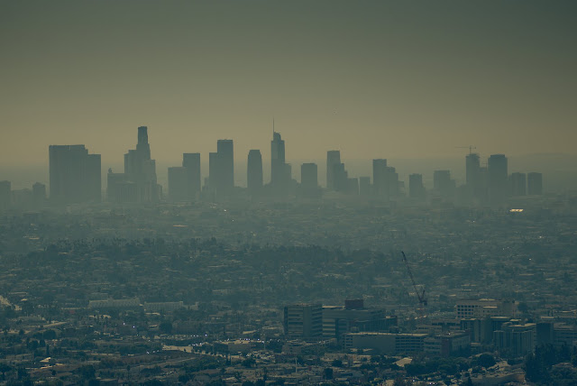
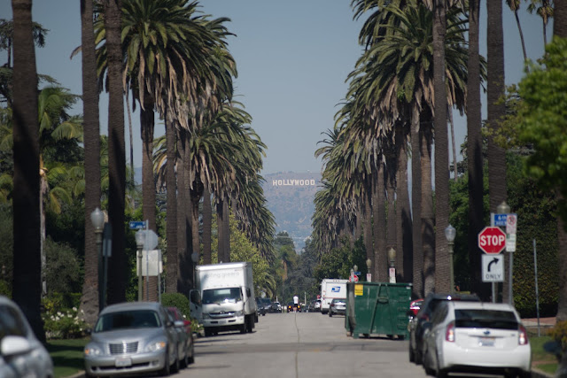
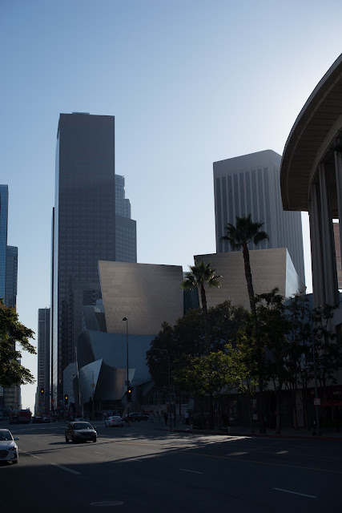
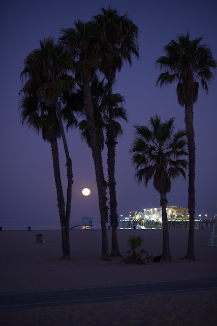
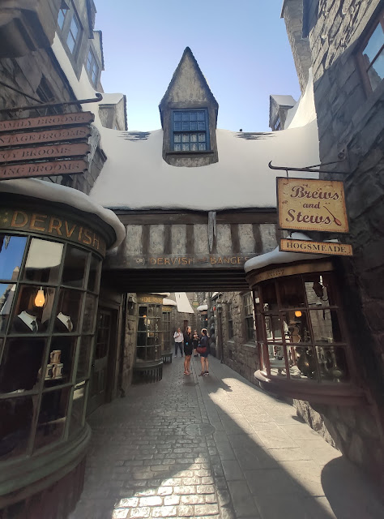

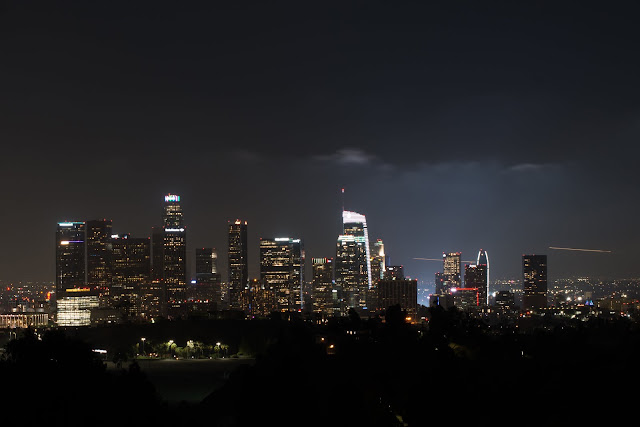
Zwiedzanie
SEQUOIA NATIONAL PARK I YOSEMITE
Dwa ostatnie parki, jakie odwiedziliśmy. Do parku sekwoi wjechaliśmy od strony Foothills Visitor Center i następnie, po pokonaniu nieskończonej ilości zakrętów, dojechaliśmy do pierwszego punktu czyli Moro Rock. Na szczyt granitowej skały prowadzi szlak ze schodów, które zostały w niej wykute, więc co tylko dodaje uroku podczas drogi na górę, skąd rozciąga się piękny widok. Odkąd opuściliśmy Yellowstone pogoda była dla nas bardzo łaskawa, więc widok, jaki zastaliśmy mógłby zdecydowanie utrzymać nas tam na dłużej (gdyby nie nasz napięty plan ;) ). Kolejne miejsce to charakterystyczny dla parku Tunnel Log, czyli drzewa, które w 1937 roku zawaliło się na drogę i trzeba było wyrąbać w nim otwór wielkości pojazdu. Po drodze zatrzymaliśmy się też przy skupisku sekwoi Parker Group. Następnie Giant Forest Museum, Beetle Rock i spacer szlakiem Big Tree Trails. I tak powoli zbliżaliśmy się do General Sherman Tree. Krótki i dobrze utrzymany szlak prowadzi w dół do największego na świecie drzewa pod kątem objętości, które liczy sobie 3 tysiące lat. Żeby dopełnić wrażeń związanych z wielkimi drzewami, w dalszej drodze wstąpiliśmy jeszcze na szlak prowadzący do The General Grant Tree, gdzie oprócz zadzierania głowy, można było przejść tunelem wydrążonym wzdłuż przewróconej sekwoi. W towarzystwie wiewiórek oczywiście. I na koniec Yosemite. Przyznam szczerze, że byliśmy już trochę przytłoczeni ilością rzeczy, jakie zdążyliśmy zobaczyć podczas tej wycieczki i zmęczeni, ale ten park okazał się doskonałym punktem na ostatnie zwiedzanie. Po wyjechaniu na Glacier Point, można było po prostu siedzieć i patrzeć na rozciągający się przed nami widok na Half Dome, wygrzać się na kamieniach w towarzystwie Bridalveil Fall i zjeść obiad przy stołach piknikowych na Cathedral Beach. Jedyny szlak, jakim przeszliśmy tego dnia był Lower Yosemite Fall Trail, gdzie spotkaliśmy sarny ale nie spotkaliśmy wodospadu, ponieważ było zbyt sucho. To był bardzo leniwy dzień, ale chyba po prostu wszyscy go potrzebowaliśmy. Wracając do San Francisco ostatniego dnia, po sprzątnięciu samochodu, wybraliśmy się na obiad do Rok Steakhouse, gdzie szefem kuchni właściwie jesteśmy sami, bo dostajemy kawałek mięsa i warzywa do usmażenia samodzielnie, na kamieniu wulkanicznym rozgrzanym do 370 °C. Ostatnie, ekspresowo zwiedzone miejsce to Googleplex, czyli kompleks budynków Google w Dolinie Krzemowej i wracamy do domu. Żeby wrócić tutaj kiedyś po więcej 💪😃
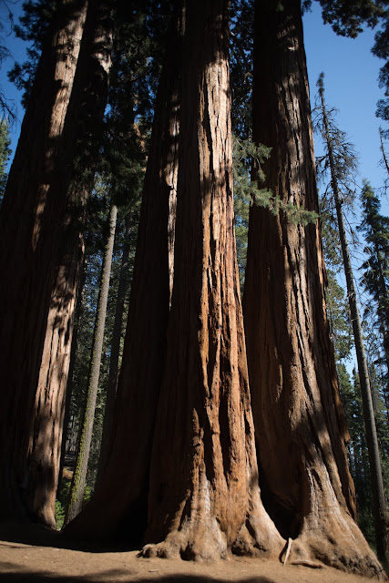
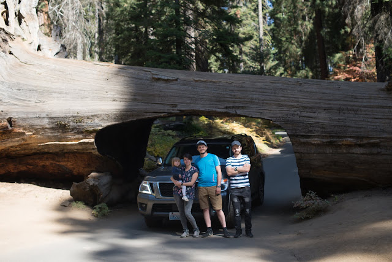
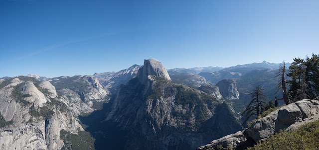
Zdjęcia robił najlepszy fotograf - Marcin Kaciuba.